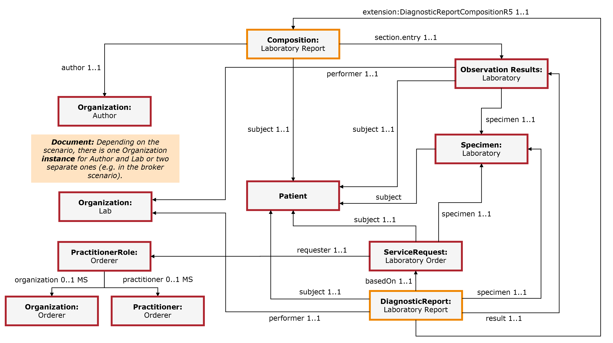

CH ELM (R4)
1.1.0 - trial-use

CH ELM (R4)
1.1.0 - trial-use

This page is part of the Observations of notifiable communicable infectious diseases (v1.1.0: STU 1 Draft) based on FHIR (HL7® FHIR® Standard) R4. The current version which supersedes this version is 1.10.0. For a full list of available versions, see the Directory of published versions
That figure illustrates the resources and their references to each other for which profiles are defined to represent the CH ELM laboratory report.

Fig. 6: Resource Overview
This CH ELM base profile constrains the Composition resource for the purpose of laboratory test reports.
This CH ELM base profile constrains the DiagnosticReport resource for the purpose of laboratory test reports.
This CH ELM base profile constrains the Bundle resource for the purpose of laboratory test reports.
CH ELM profile for the Bundle resource with a stricter validation mechanism than the base profile via binding strength reinforcement for the leading code element and checking patient name requirements if possible.
This CH ELM base profile constrains the Observation resource for the purpose of laboratory test reports.
CH ELM profile for the Observation resource with a stricter validation mechanism than the base profile via binding strength reinforcement for the leading code element.
This CH ELM base profile constrains the Organization resource for the author of the laboratory report.
This CH ELM base profile constrains the Organization resource for the reporting laboratory.
This CH ELM base profile constrains the Organization resource for the orderer.
This CH ELM base profile constrains the Patient resource for the purpose of laboratory orders and test reports.
This CH ELM base profile constrains the Practitioner resource for the orderer.
This profile constrains the PractitionerRole resource for the orderer:
This CH ELM base profile constrains the ServiceRequest resource for the purpose of laboratory orders.
This CH ELM base profile constrains the Specimen resource for the purpose of laboratory test reports.
A profile on the DocumentReference resource for the publication response:
A profile on the DocumentReference resource with publication constraints:
A profile on the DocumentReference resource with publication constraints:
A profile on the Find Document References Response message